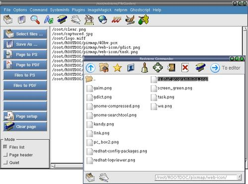

Convert multiple files to PDF

Step 1 : Click "Clear page" to clear the editor if needed.
Step 2 : Click "Select files ..." button to open a open-file dialog.
Step 3 : Double click on a file or multi-select multiple files
to display a file listing on the editor page.
Step 4 : Click "Files to PDF" button to save the file listing
files with the '.pdf' extension.
File mode : Make sure "File list" mode is checked.
note : The current directory of the xfgcommander is the current
directory of the saving location for all files saved.They will be highlighted
after you close a dialog or executed a menu command.